Pendahuluan
Panduan ini menunjukkan cara mendapatkan penyimpanan Google Photos unlimited dengan kualitas original menggunakan emulator LDPlayer. Modifikasi sistem Android memiliki risiko, namun penggunaan emulator meminimalisir dampaknya pada perangkat utama Anda. Backup data penting Anda sebelum memulai. Metode ini mungkin tidak berfungsi selamanya karena Google dapat mengubah kebijakan mereka kapan saja.
Alat dan Bahan
- PC (minimal quad core, RAM 8GB)
- LDPlayer 9
- Magisk Kitsune
- Module Magisk LSPosed
- Pixelify GPhotos
- Total Commander
- Akun Google
Langkah-Langkah
I. Rooting LDPlayer
- Buka aplikasi LDPlayer.
- Buka Pengaturan LDPlayer > Disk. Aktifkan write access. 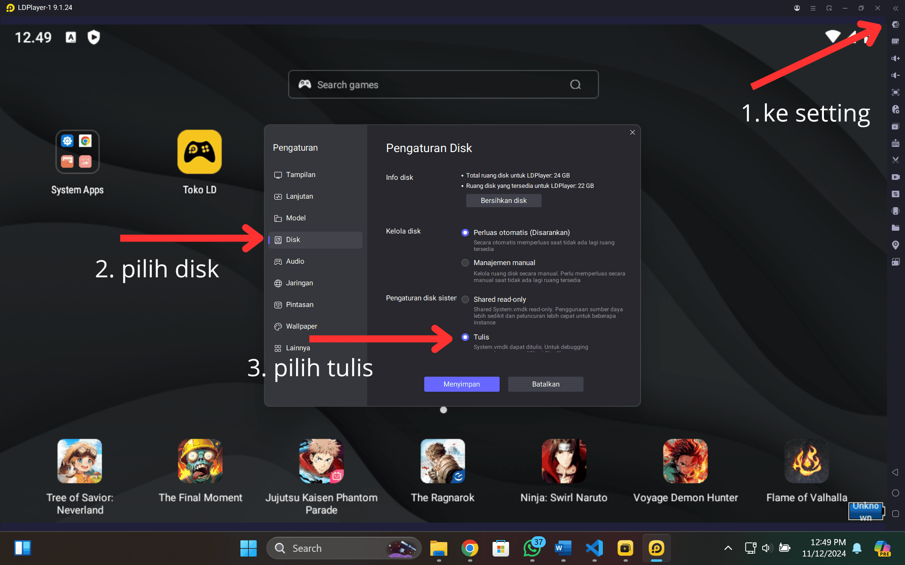
- Buka Pengaturan LDPlayer > Other. Aktifkan root access, lalu reboot LDPlayer. 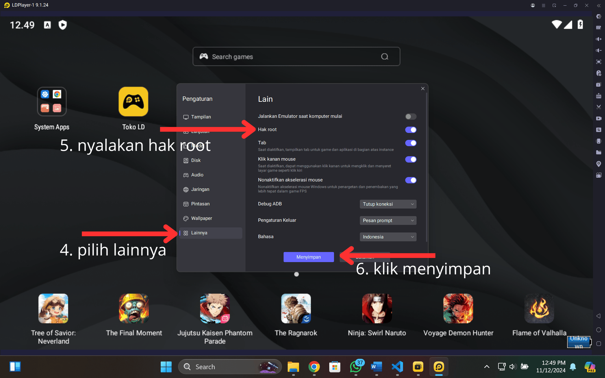 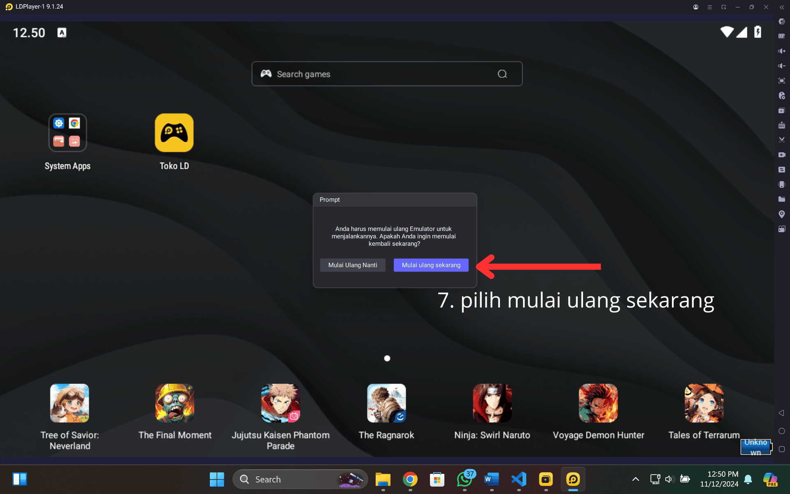
- Setelah LDPlayer menyala kembali, instal Magisk Kitsune (drag and drop). Berikan izin root jika diminta. 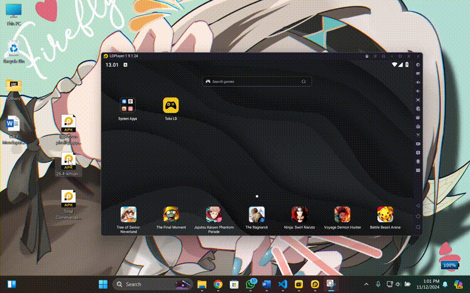
- Buka Magisk Kitsune > Install > Options recovery mode. Pilih direct install to system partition > Install. 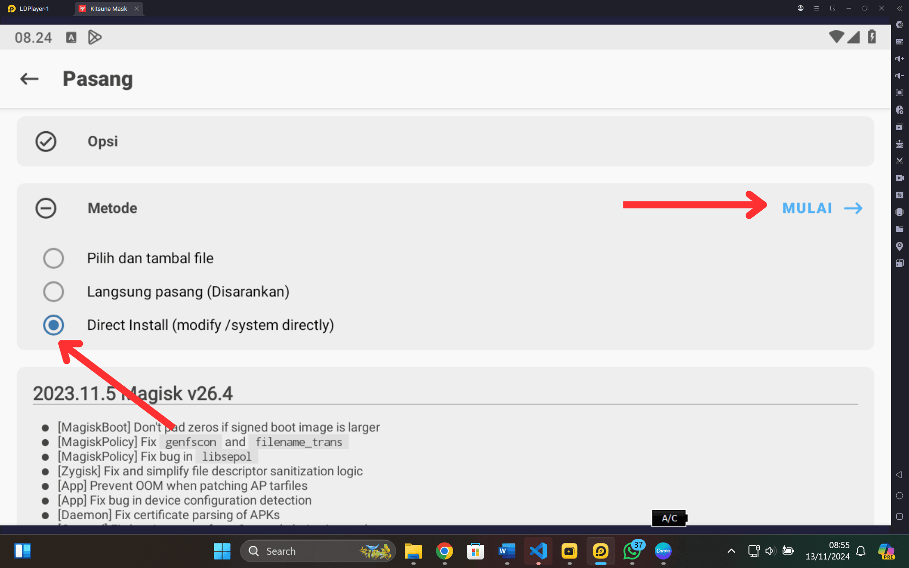 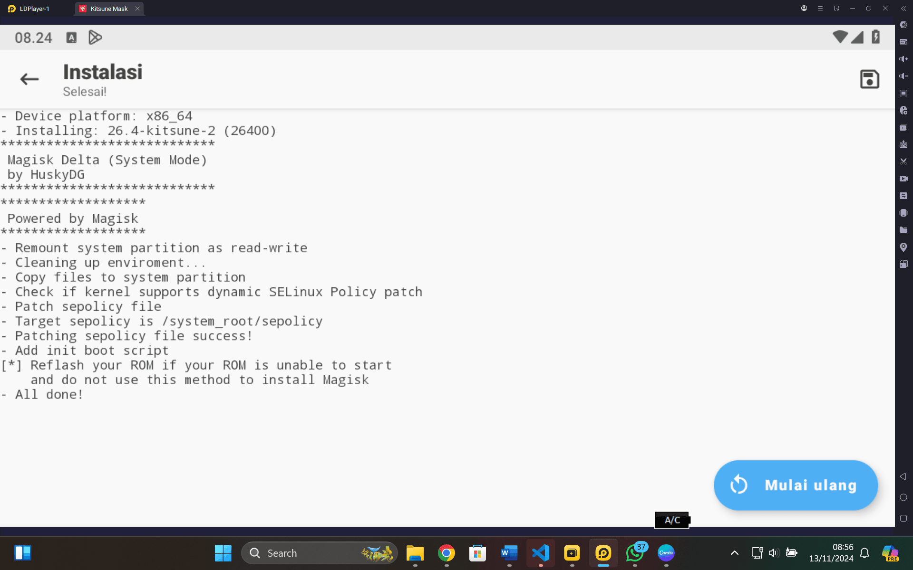
- Instal Total Commander (drag and drop).
- Buka Total Commander. Hapus file "su" di /system/xbin/ (beri izin root). 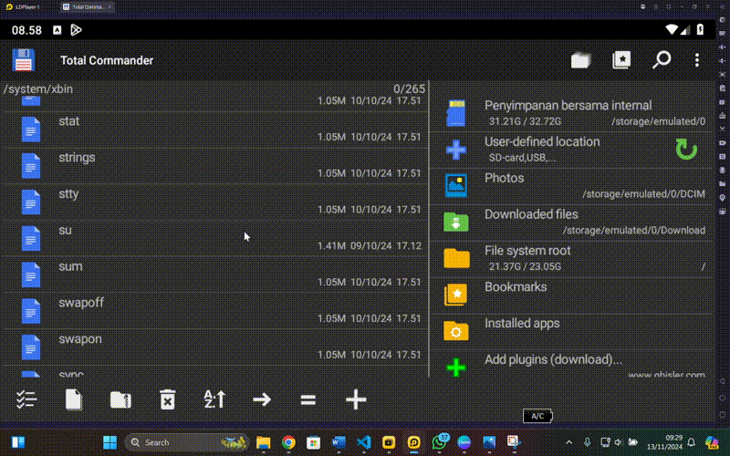
- Remount drive (jika diperlukan).
- Reboot LDPlayer.
- Magisk Kitsune kini terpasang.
II. Mengaktifkan Unlimited Google Photos
- Buka Magisk Kitsune > Pengaturan.
- Pada bagian Magisk, aktifkan Zygisk. 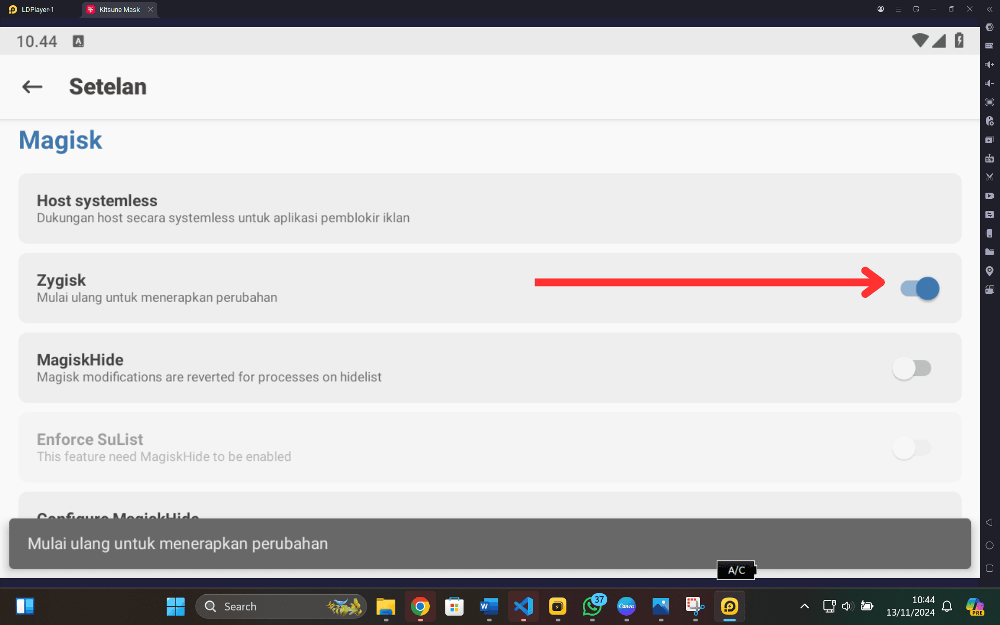
- Di browser LDPlayer, unduh LSPosed Zygisk dari bagian assets pada tautan LSPosed. 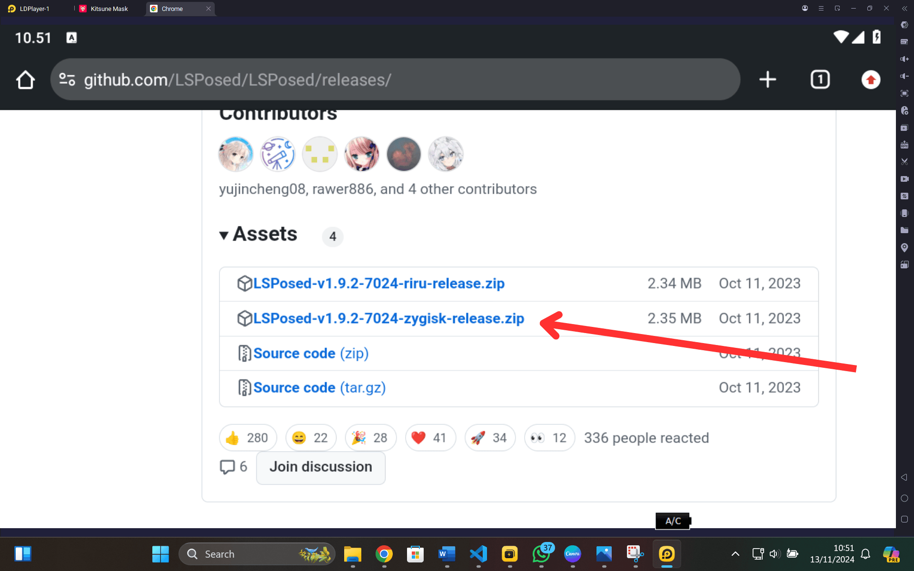
- Buka Magisk > Modules. Instal modul LSPosed yang telah diunduh. 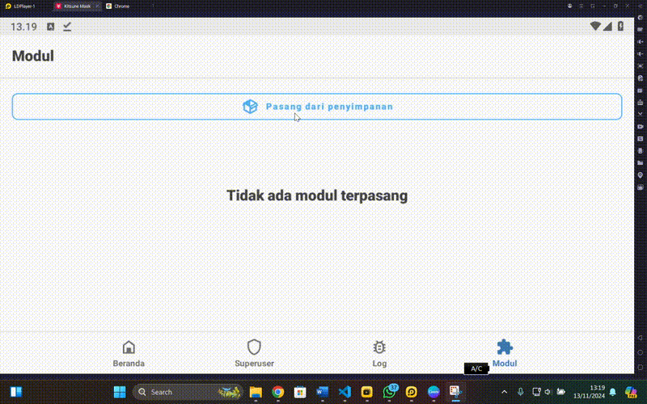
- Instal Pixelify GPhotos (drag and drop). Reboot LDPlayer.
- Setelah LDPlayer menyala kembali, aktifkan LSPosed untuk Pixelify GPhotos via notifikasi.
- Buka Pixelify GPhotos > Device spoof. Pilih Pixel XL (jangan pilih Pixel terbaru).
- Klik "Force Stop" Google Photos (beri izin root).
- Pastikan Anda telah login ke akun Google dan menginstal Google Foto di LDPlayer.
- Buka Google Photos. Periksa apakah penyimpanan unlimited telah aktif. 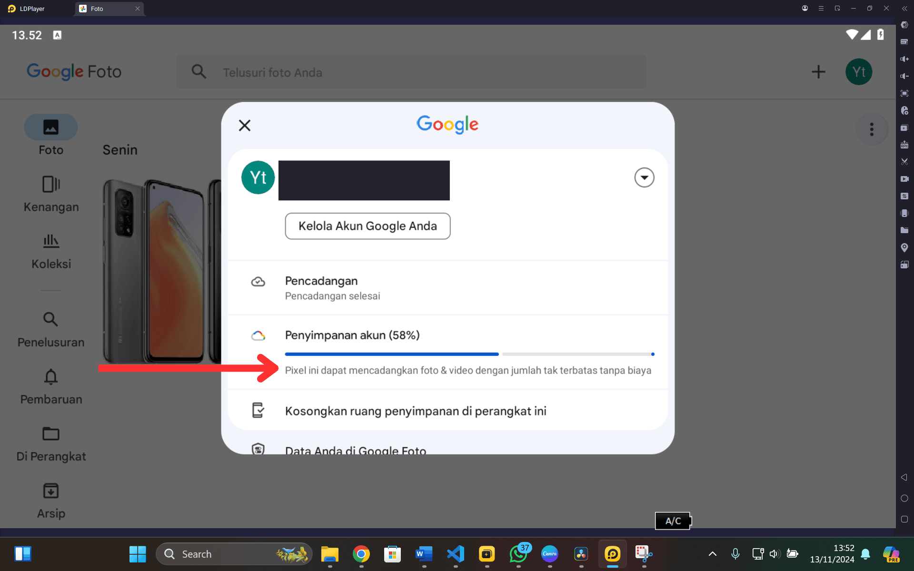
Kesimpulan
Selamat! Anda telah berhasil mengaktifkan penyimpanan unlimited Google Photos dengan kualitas original (semoga). Ingat, modifikasi sistem Android memiliki risiko. Selalu backup data Anda. Metode ini bersifat sementara dan Google dapat mengubah kebijakan mereka kapan saja.